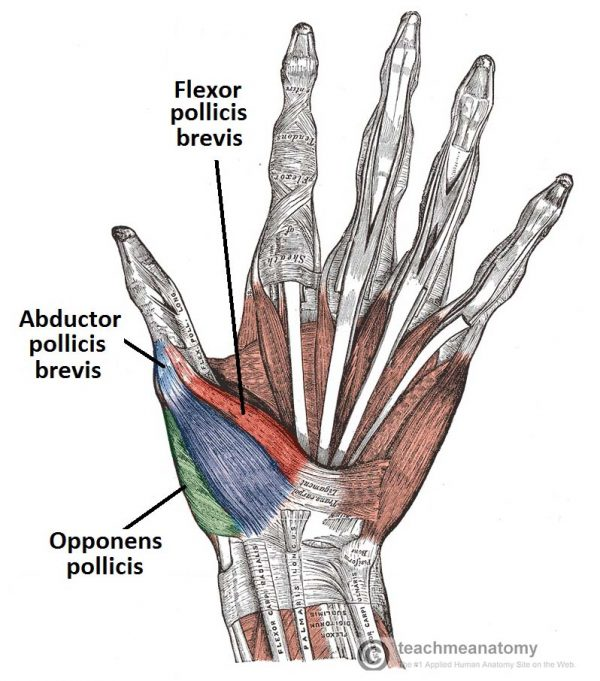
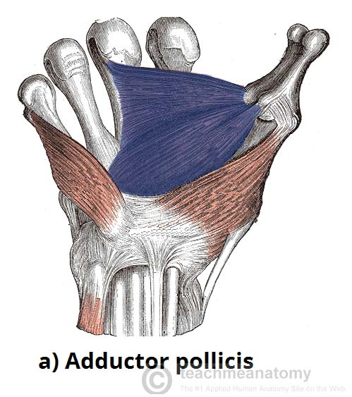
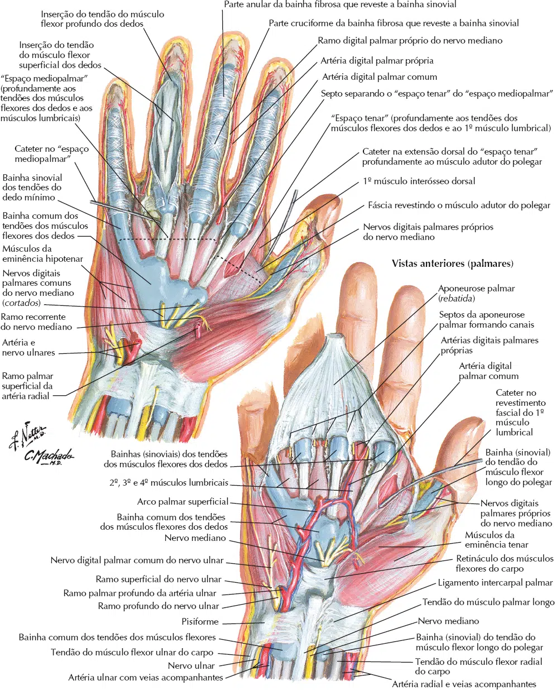
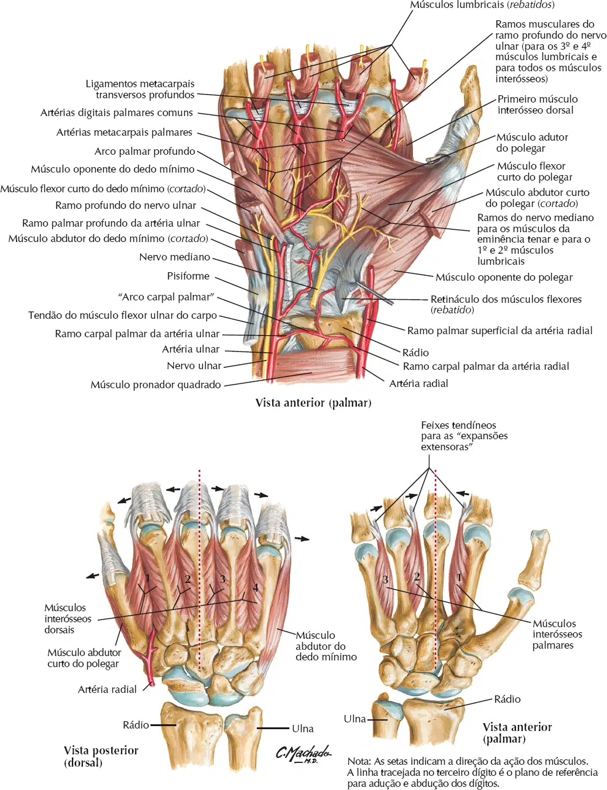
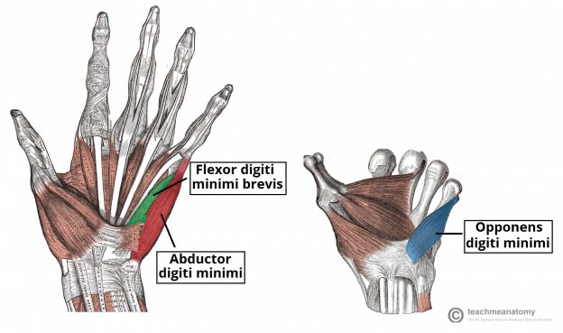
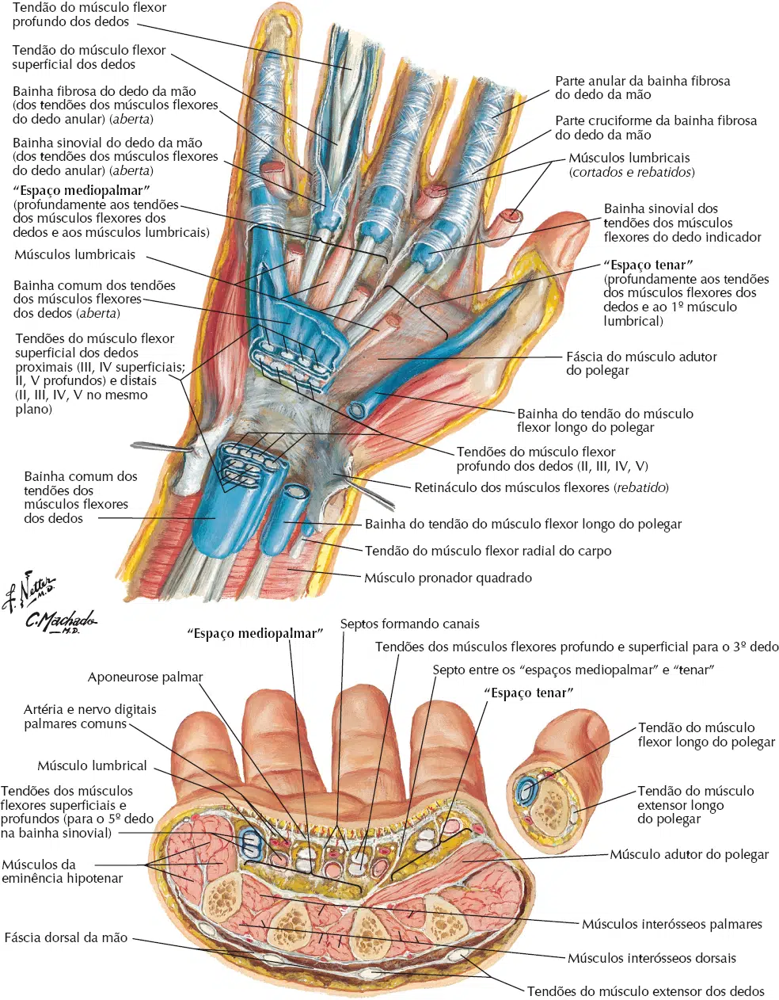
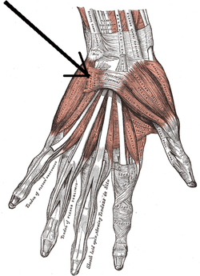
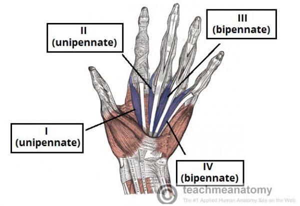
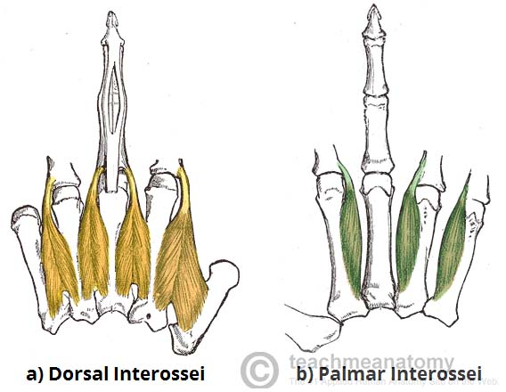

Os músculos que atuam na mão podem ser divididos em dois grupos: músculos extrínsecos e intrínsecos.
Os músculos extrínsecos estão localizados nos compartimentos anterior e posterior do antebraço.
Eles controlam os movimentos brutos e produzem um aperto forte.
Os músculos intrínsecos da mão estão localizados dentro da própria mão.
Eles são responsáveis pelas funções motoras finas da mão.
Os músculos intrínsecos da mão são:
Tenares, hipotenares e curtos.
Os músculos tenares são três músculos curtos localizados na base do polegar.
Produzem uma protuberância, conhecida como a eminência tenar.
Eles são responsáveis pelos movimentos finos do polegar.
Inserção Proximal: Trapézio e retináculo dos flexores.
Inserção Distal: 1º metacarpal.
Inervação: Nervo Mediano (C8 e T1).
Ação: Oposição (flexão + adução + pronação).

Inserção Proximal: Escafóide, trapézio e retináculo dos flexores.
Inserção Distal: Falange proximal do polegar.
Inervação: Nervo Mediano (C8 – T1).
Ação: Abdução e flexão do polegar.
Inserção Proximal: Trapézio, trapezóide, capitato e retináculo dos flexores.
Inserção Distal: Falange proximal do polegar.
Inervação: Nervo Mediano e Nervo radial.
Ação: Flexão da MF do polegar.
Inserção Medial: 2º e 3º metacarpal e capitato.
Inserção Lateral: Falange proximal do polegar.
Inervação: Nervo Ulnar (C8 e T1).
Ação: Adução do polegar.



Os músculos hipotenares produzem a eminência hipotenar – uma protrusão muscular no lado medial da palma, na base do dedo mínimo.
Esses músculos são semelhantes aos músculos tenares em nome e organização.
Inserção Proximal: Pisiforme e tendão do músculo flexor ulnar do
carpo.
Inserção Distal: Falange proximal do dedo mínimo.
Inervação: Nervo Ulnar (C8 e T1).
Ação: Abdutor do dedo mínimo.

Inserção Proximal: Hâmulo do hamato e retináculo dos flexores.
Inserção Distal: Falange proximal do dedo mínimo.
Inervação: Nervo Ulnar (C8 e T1).
Ação: Flexão da MF do dedo mínimo.
Inserção Proximal: Hâmulo do hamato e retináculo dos flexores
Inserção Distal: 5º metacarpal
Inervação: Nervo Ulnar (C8 e T1)
Ação: Oposição do mínimo.

Inserção Proximal: Aponeurose palmar.
Inserção Distal: Camada profunda da derme da eminência
hipotenar.
Inervação: Nervo Ulnar (C8 e T1).
Ação: Pregas transversais na região hipotenar.

Inserção Proximal: Tendão do músculo flexor profundo dos dedos.
Inserção Distal: Tendão do músculo extensor dos dedos.
Inervação: Nervo Mediano (1º e 2º) e Nervo Ulnar (3º e 4º)
(C8 e T1).
Ação: Flexão da MF e extensão da IFP e IFD do 2º ao 5º
dedos + propriocepção dos dedos.

Atuam no 2, 4º e 5º dedos.
Inervação: Nervo Ulnar (C8 – T1).
Ação: Adução dos dedos (aproxima os dedos).

Atuam do 2º ao 5º dedos.
Inervação: Nervo Ulnar (C8 – T1).
Ação: Abdução dos dedos (afasta os dedos).